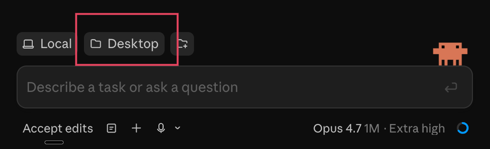
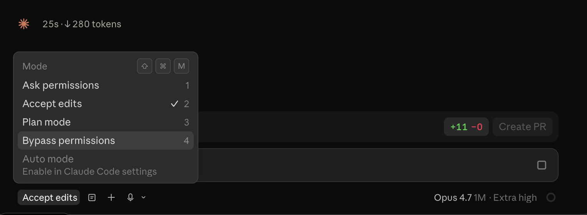

Set up a folder on your desktop your agent reads, give it a couple of standing jobs, and add the first person you work with. Each step has a prompt you paste into Claude Code.
You're not going to create this by hand. You're going to open Claude Code and ask it to make the folders for you. This is also a good first taste of letting a coding agent act on your own machine.
Download the Claude desktop app from claude.ai/download if you don't have it yet. There's just one Claude app — Chat, Cowork, and Code all live inside it.
When you open it, look at the top left, just above where it says New session. There's a switcher there. Pick Code — that's the one we'll use today.
Once you're in Code, you'll see a folder switcher at the top. Click Desktop so Claude Code is pointed at your desktop — that's where it'll create your context folder.

By default, Claude Code pauses and asks for approval before it creates or edits files. That's a safe default, but it gets chatty fast when you're asking it to set up a whole folder structure.
To let it run uninterrupted: press Shift + ⌘ + M (or click the mode indicator in the bottom-left) to open the Mode menu, then pick Bypass permissions.

Tell Claude Code exactly what to build. Copy and paste:
Claude Code will create the folder on your desktop, make all five subfolders, and drop a README in each one. Check your desktop — you should see a new context folder.
You don't need to fill these in all at once. The point of the structure is that when you learn something worth remembering — about a teammate, a project, your own goals for the quarter — you know where it goes.
Empty folders aren't very interesting. Let's give Claude Code something useful to do — keep a running list of everything on your plate, and update it automatically every time you mention a new task.
Type a few things that are on your plate right now — work or personal, whatever's rattling around in your head. Aim for three to five. Claude will sort them into categories when it writes the file.
One per line. Don't bother organizing — that's Claude's job.
Now teach Claude to keep the list updated without you asking. Paste this:
CLAUDE.md is a standing-instructions file Claude Code reads at the start of every session. Anything in there applies automatically — so from now on, when you say "I need to follow up with Sam" or "remind me to renew my passport," it lands in your reminders without you doing anything else.
Now that you have a reminders list, let's give Claude a job that uses it. You're going to teach it what to do when you say "plan my day" — read your calendar, read your reminders, ask what you want to prioritize, and build you a schedule.
Paste this into Claude Code:
Claude can't read your calendar yet (we'll set that up later today). For now: take a screenshot of today's calendar, paste it into Claude Code, and send this prompt with it:
Walk through the flow — tell Claude what you want to prioritize, and confirm the schedule. Once you've landed on a schedule you're happy with, paste this so it writes the daily note (since it can't add events to your calendar yet):
Once you connect calendar access later, you can skip the screenshot and just say "plan my day."
Once Claude has landed on a schedule you're happy with, you've just told it a bunch about how you like your day to flow. Capture it now so every future "plan my day" gets it right faster. In the same conversation, paste this:
Your Team folder is empty. Let's fix that — pick someone you work with often. Your manager is a good place to start, but it can be anyone whose name comes up a lot in your day.
Fill in the boxes. The prompt below updates as you type — yellow = empty, green = filled.
You've set up the folders, captured what's on your plate, planned your day, and added a person to your team. Now let's see what all that context actually buys you.
Open a new chat in Claude Code and make sure it's still pointed at your context folder. Starting fresh proves the system works on its own — it's just the files doing the work, not the conversation you've been having.
Paste this:
Same conversation. Paste this:
Compare the two versions. The first one knows about your day. The second one knows about your day and who you're writing to. That's what the context layers buy you — every file you add makes every future answer more specific.